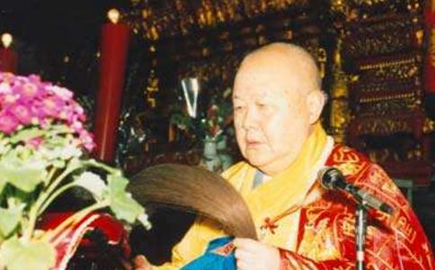

真禅法师是我国当代着名高僧、教育家、慈善家和社会活动家。他的一生是爱国爱教的一生，他的一生是弘法利生的一生，他的人格是我国当代僧人的楷模，他的法绩当载人现代佛教篇章。因此，当我们纪念他圆寂十周年的时候，就要缅怀他爱国爱教、关爱社会、热心慈善、爱好和平的高贵品德和不朽法绩，发扬他“弘法为家务，利生为事业”的崇高精神，推动佛教与社会主义社会的协调发展。现就他的生平法履和思想法绩作一简要阐述。
真禅法师（1916—1995），俗姓王，名鹤树，江苏省东台县安丰镇人。父亲务农，母亲刘氏，都是虔诚的佛教信徒。真禅法师弟兄三人，他排行第三。二兄鹤才，早岁出家，法名心岩。他出身贫寒，6岁那年家乡又遭洪灾，雪上加霜，无以为生，遂于童稚之年就随二兄心岩至东台县安丰镇净土庵出家，依净修老和尚披剃，法名真禅，字妙悟，号昌悟。从此，他就成了一位天真活泼的沙弥。次年，就在寺内学习（四书），主修（禅门日诵）、《妙法莲华经)等。稍长，即在寺内烧火做饭，挑水拣菜，农忙时也下地从事农活，有时也随师父们去信众家做超荐法事。16岁那年，至南京宝华山隆昌律寺依德浩和尚受具足戒，成了一位比丘。之后，先后就读于东台三昧寺启慧佛学院、焦山定慧寺佛学院、镇江竹林寺佛学院、泰州光孝寺佛学院、上海佛学院、上海圆明讲堂楞严专宗学院、南京中国华严速成师范学院等院校，打下了坚实的佛学根基。他先后亲近过应慈、圆瑛、常惺、震华诸上人，遂有法师风范。1942年，应恩师震华法师之召，到玉佛寺协助办理上海佛学院，历任副寺、知客、信众部副主任、监院、寺务处主任等职。1945年至镇江竹林寺受记，为守之、震华、窥谛三法师的法徒、临济正宗第47世。从是年起，他又先后担任镇江竹林寺、苏州狮林寺等名刹住持及竹林佛学院院长，遂桃李遍及欧、美和大陆、港、澳、台等地区。1949年，至上海静安寺参加孑L雀明王法会，聆听持松法师讲《fL雀明王经》。1951年，到圆明讲堂随圆瑛法师系统修学《楞严经》、《阿弥陀经》和《大乘起信论》等典籍，密接圆瑛心印，并进上海玉佛寺。
“文化大革命”期间，他与五位僧人留在寺内，以糊纸盒度日，并设法保护了寺庙建筑和文物。1979年，当选为上海市佛教协会会长，并任玉佛寺住持。从此，他就筹集资金，整修殿堂，招集僧众，恢复佛教丛林制度，流通经书法物，开展宗教活动，为玉佛寺佛教的恢复、振兴、发展作出了不可磨灭的贡献。
1983年，他被选为上海市政协常委，并创办上海佛学院，任院长。1988年，受聘为上海儿童福利院名誉院长，并设立“真禅法师残疾儿童福利基金”。同年9月，又兼任上海静安寺住持。1992年11月，又兼任河南省开封市大相国寺住持。1993年10月，当选为中国佛教协会副会长。历任全国政协委员、上海市政协常委、上海海外联谊会理事会理事。1995年12月1日，因心脏病突发，圆寂于上海玉佛寺。世寿80，僧腊73。其主要着作有《玉佛丈室集》10集、《上海玉佛寺丛书》27种、《佛法·社会·人生》、《禅宗佛学思想论集》、《真禅禅藻集》、《玉佛禅寺》画册等，主编的着作有《上海玉佛禅寺建寺一百一十周年纪念特辑》、《河南开封大相国寺佛像开光·迎奉藏经·方丈升座纪念特辑》、《持松法师论着选集》、《持松法师纪念文集》、《应慈老法师圆寂三十周年纪念文集》等。此外，还有佛学研究论文多篇，发表于海内外相关刊物。
思想法绩
真禅法师着作宏富，思想精粹，解行并重，为上海玉佛寺的复兴和开创，为上海佛教的重建和振兴，为中国佛教的恢复和发展，倾注了大量心血，作出了杰出贡献。以下就他的思想法绩作一论述。
一、爱国爱教思想
佛教虽然是从印度传来的宗教，但经过魏晋南北朝，与中国传统文化的碰撞融合，吸收了儒、道文化的营养，到隋唐时期就成了具有中国特色的宗教，故名曰中国佛教。五台山僧人说：“我们虽然出了家，但并没有出国。”中国佛教徒虽然也姓释，但他还是炎黄子孙，骨子里还是中国血统。佛教经典《心地观经》中的《报恩品》说：“世间之恩，有其四种：一父母恩，二众生恩，三国王恩，四三宝恩。如是四恩，一切众生平等荷负。”国王恩就是国土恩；一切众生平等荷负，就是僧俗都有报效祖国的义务。况且“国不治，家不宁，身不安，释氏之道何由而行哉？”所以，真禅法师说：“爱教必须爱国，爱国才能爱教”；“爱国爱教，二者如车之两轮、鸟之两翼，缺一不可。”阐明了爱国爱教的辩证关系。他在《谈谈佛教与中国特色的社会主义社会相适应的问题》中又说：“一方面佛教本身就具有与中国特色的社会主义社会相适应的功能；另一方面，党和政府切实认真贯彻执行了宗教信仰自由政策，使得这种‘相适应’成为现实。但是，要真正实现‘相适应’，关键还在于我们佛教徒本身。如果佛教徒人人都能加强自身建设，都能做到爱国爱教，遵纪守法，积极参加社会主义精神文明和物质文明建设，那么佛教就一定会与有中国特色的社会主义社会相适应，从而成为建设有中国特色的社会主义社会的重要组成部分。”佛教是一种劝善止恶的宗教。《法句经》下卷《述佛品》说：“诸恶莫作，众善奉行，自净其意，是诸佛教。”“人能行一善则去一恶，去一恶则息一刑。一刑息于家，万刑息于国，此所谓坐致太平者。”这里的重点是“自净其意”，自净其意，就是要去掉自己心上的贪、嗔、痴、慢、疑、邪见等六种烦恼。其中最主要的是贪心，有了这一贪心，就会贪污盗窃，侵吞国家和人民的财产，“我的是我的，你的也是我的”。这就是一切纷争乃至一切战争的根源。所以，只要去掉贪心，显出真心，去掉私心，显出公心，去掉假恶丑，树立真善美。一人能行真善美则一家能行真善美，一家能行真善美则一村能行真善美，一村能行真善美则一乡能行真善美，乡乡真善美，县县真善美，省省真善美，我们的国家就成了一个真善美的国家。因此，真禅法师说佛教本身就具有与中国特色的社会主义社会相适应的功能。所以，在党和政府正确贯彻执行宗教信仰自由政策的前提下，关键就成了佛教徒的自身建设。而佛教徒的自身建设，其关键也是佛祖教导的“自净其意”和他所制订的戒律。做到了这两点，就能做到爱国爱教，遵纪守法，积极参加两个文明建设，真禅法师抓住了佛教与社会主义社会相适应的关键，无论在教内、教外，还是在国内、国外，他都时刻不忘宣传爱国爱教的思想和宗教信仰自由政策。他是这样说的，也是这样做的。所以，他始终能够与党风雨同舟，肝胆相照，同心同德，参政议政，积极参加社会主义两个文明建设。从而获得了党和人民的爱戴、尊敬、赞扬。[page]
二、重视僧伽教育
僧伽就是“具备妙行、具备质直行、具备如理行、具备正行”的佛弟子们。换句话说，僧伽就是佛学专家、民众信仰的指导者、正法的继承者。通俗点讲，僧伽就是4人以上的和合僧团。若用道宣律师的话说，僧伽就是具有理和、事和（戒和同修、见和同解、身和同住、利和同均、口和无诤、意和同悦）而和睦相处的僧团。以其担负着续佛慧命、绍隆正法、指导民众信仰的艰巨任务，故得加强教育，提高其佛学理论水平和道德修养。因此，真禅大和尚就特别重视僧伽教育，积极培养佛教事业的接班人。前面说过，早在1983年他就创建了上海佛学院，并亲自担任院长，还提出了两爱（爱国（明）神僧传【M】，（大藏经）第50册，1983年元月再版，台北：新文丰出版有限公司。爱教）三懂（懂得佛教教理和教史、懂得法务活动、懂得寺庙管理）的教育理念。又在《培养青年僧人是中国佛教界的当务之急》一文中指出，办好各级各类佛学院校，必须注意五点：一是筹措充足的资金，二是聘请有教学经验的教师，三是编辑统一的教材，四是重视入学僧的质量，五是明确培养目标。真禅法师不仅说在嘴上，写在纸上，而且落实到了他的办学之中。所以，十多年来，上海佛学院在他的领导与关怀下，培养出了近2印名有理想、有道德、有文化、有纪律（四有），爱祖国、爱人民、爱劳动、爱科学、爱社会主义（五爱）的青年学僧。目前，他们已分布在全国各地的寺院或院校之中，分别担任着住持、监院，或导师，像现在玉佛寺觉醒大和尚那样，管理寺庙，弘法济世，传承正法。这是他对中国佛教的巨大贡献。
三、坚持农禅并重
农禅并重始于唐代高僧大智怀海禅师制订的《百丈清规》。《景德传灯录》卷六《百丈大智禅师》中云：“普请法，上下均力也。”《五灯会元》卷三《百丈怀海禅师》中也云：“师凡作务执劳，必先于众，主者不忍，密收作具而请息之。师曰：‘吾无德，争合劳于人。’即遍求作具不获而亦忘餐，故有‘一日不作，一日不食’之语流播寰宇矣。”怀海禅师制订的普请法，就是禅门的一种集体劳动制度。据日本圆仁慈觉大师的《人唐求法巡礼行记》载：“此制在唐代时已经遍行各地，当收获蔓菁、萝卜时，院中上座等尽出拣叶；如库头无柴时，院中僧等尽出担柴。”农禅并重，就是指僧人们不仅要学习佛教义理、坐禅修行，而且要参加生产劳动。这不仅有助于心境融合、佛法与世事打成一片，也有利于寺院经济的自给自足，改变一些僧人的惰散习气。所以，自“马祖创丛林，百丈制清规”之后，农禅并重之风就成了我国佛教的一种优良传统。真禅法师是临济正宗的一位禅师，他所在的玉佛寺又是一座着名的禅宗丛林，所以他就继承发扬了这一优良传统。前面说过，真禅法师在沙弥时，就在寺内烧火做饭，挑水拣菜，农忙时也下地从事农活。“文化大革命”期间，真禅法师和留寺的5位僧人还靠糊纸盒度日。1979年，他担任了玉佛寺住持后，又带领合寺僧人筹措资金，搬砖运木，挑水和泥，和工人们一起劳作，整修殿堂，庄严佛像，才使玉佛寺旧貌换了新颜。特别是在他兼任了开封大相国寺住持后，更是身先士卒、劳心劳力、废寝忘食地工作，没有几年又使其变成了一座规模宏大、建筑雄伟、佛像庄严、环境幽雅的名刹。目前，真禅法师曾住持过的玉佛寺、静安寺和大相国寺的师父们，又都继承发扬了这一优良传统，一面修行弘法，保护文物古迹，一面还接待四海宾朋、旅游客人，有的还植树造林、养花种菜，既美化了环境，又改善了生活，同时也培养了僧众勤劳俭朴的生活作风，也有助于生活禅的实践磨炼。
四、注重学术研究
中国佛教协会已故会长赵朴初居士认为，注重佛教文化的学术研究是中国佛教的优良传统之一。他说：“我国佛教历史上，高僧辈出，大德如林。他们译经着述，创立宗派，传经受业，留下了浩瀚的佛教文学、艺术、历史、哲学的宝贵资料，大大地丰富了我国民族文化的宝库。我们应该在新的历史条件下，继承和发展中国佛教学术研究的优良传统，努力开创佛教教学和研究工作的新局面。”时隔4年，他又在中国佛协第五届全国代表大会上指出：“佛教文化学术研究工作有了恢复和发展，但远不能适应‘两个’文明建设、佛教事业和国际文化学术交流的需要。这种状况同中国佛教在国际上所处的重要地位极不相称。全国佛教界必须高度重视、大力支持和切实加强佛教文化学术研究工作。”“要加强中国佛教文化研究所的建设，从佛教界和社会上广泛罗致人才，形成一支能担当佛学各基本领域研究工作的专职和兼职的研究队伍。”真禅法师积极响应朴老的号召，相当重视佛教文化研究工作。他认为“看一个国家或一个时代的佛教是否发达昌盛，主要不是看佛教寺院的数量和信徒的多少，而是要看佛学研究者的多少和研究水平的高低。…‘数千年的佛教文化遗产亟待整理，当代出现的一些新的佛学理论，也值得进行研究。，，他把佛学研究人员的多少和研究水平的高低，看作佛教昌盛与否的标准。于是，他就罗致佛学研究的高级人才，整理注疏佛教典籍，研究解决新出现的佛学理论问题，把历史和现实结合起来，写出高水平的佛学论着。真禅法师身体力行，在修持弘法之余，伏案疾书，潜心着述。在短短17年中，就出版着作41种（本），主编集子5本，还在国内外相关刊物发表论文多篇。这些着述内容丰富，涉及面广。如《般若波罗蜜多心经讲义》、《无量寿经浅释》和《大方广佛华严经·普贤行愿品浅释》，是对佛教经典的现代阐释，有助于人们对佛教典籍的阅读和理解；《禅宗佛学思想论集》和《论人间净土》等，是关于佛学理论和禅法的论着，其中有不少独到见解和亮点，很值得我们研究、继承和发扬光大，是一笔宝贵的思想财富。《玄奘求法之路巡礼记》、《西藏朝圣记》和《云南参访记》等，是关于巡礼弘法的着作，字里行间洋溢着他爱国爱教的思想感情；《澳洲弘法纪行》、《天竺纪行》、《泰国弘法记》和《欧洲七国弘法记》等，是关于佛教国际友好交往的记述，表现了他积极参加社会活动的高僧风范；《缅怀禅门尊宿虚云老和尚》、《纪念太虚大师诞生一百周年》和《亲近圆瑛大师的日子里》等，是关于高僧传记的着述，反映了他尊师敬贤的高贵品质；《佛法·社会·人生》，是谈其三者关系，是理论和现实相结合的产物，对当前佛教的振兴发展有重要的现实意义。《真禅禅藻集》是关于佛教诗词方面的着作。总之，真禅法师着作等身，思想丰富，亮点颇多，很值得我们深入研究，继承光大。
五、国际友好交往
中国佛教协会已故会长赵朴初居士认为国际友好交往是中国佛教的优良传统之一，并号召佛教界要积极开展对外友好活动，宣传佛教的和平教义、传递中国佛教徒维护和平的信念和要求和平的声音。真禅法师认为佛教寺庙不仅是僧人修学的道场、联系信徒的纽带，而且是佛教徒服务四化、造福社会的立足点，还是世界各国人民了解我国的一个窗口、开展海外联谊、发展国际友好往来的场所。因此，他本着“阿弥陀佛加友好”的对外交往方针和“在教言教“的原则，自1979年以来，玉佛寺就接待了港澳台同胞、海外侨胞和国际友好人士300余万人次，其中不乏国家领导人、政治家、社会活动家和宗教领袖。向他们宣传了党的宗教信仰自由政策和我国改革开放以来安定团结的政治局面和所取得的巨大成就，使他们看到了我国宗教生动活泼的新兴景象。同时，他还先后应邀访问了港、澳、台地区和日本、印度、美国、泰国、新加坡、法国、德国、英国、瑞士、荷兰、比利时、卢森堡等国家，向这些国家的佛教徒和华侨、华裔介绍了我国改革开放以来佛教事业健康发展的情况，上海经济腾飞、浦东开发和我国社会稳定、经济快速发展、人民生活普遍改善的大好形势，同时也加深了对上述这些国家佛教状况和经济社会的了解，倾听了爱国华侨、华裔怀念祖国、渴望祖国繁荣昌盛的心声，还为各国的佛教信徒讲演了《佛法与人生》、《佛法与做人》、《佛法与长寿》、《佛法与哲学》等，先后进行了数十次开示，展示了我国博大精深的传统文化，获得了广大听众的欢迎赞叹，受到一些外国媒体的新闻报道，从而加深了相互理解，沟通了相互往来，增进了与各国佛教的友好情谊和文化交流。
六、热心慈善福利事业
关心和资助社会慈善福利事业也是中国佛教的优良传统。《法华经》说：“资生业等，皆顺正法。”《大智度论》也说：“一切资生事业悉是佛道。”这都是说，资助他人衣食住行等生命者，都是正法，都是成佛之道。《大智度论》卷27还说：“大慈与一切众生乐，大悲拔一切众生苦。”大慈大悲，救苦救难，庄严国土，利乐有情，这都是佛教的根本观点。所以，自佛教传人我国后，就做了不少具有慈善性质的义举。早在北魏时候实行的“僧祗粟”，就是“本期济施，俭年出贷，丰则收入。山林僧尼，随以施给；民有窘弊，亦即赈之”。其本义就是济贫赈灾。真禅法师遵从佛陀教导，心里装着人民，一生热心佛教的社会慈善福利事业。他在《实践佛陀遗教，广作福利事业》中说：“佛教和其它宗教的不同之处，不仅在于它为人们指示了解脱生死的涅檠之道，而且还教导人们要以出世精神作人世事业，广作福利事业以嘉惠群生。而在佛教教义中，广作资生福利事业是一个极为重要的方面。”他把广作资生福利事业看作是佛教的一个显着特点和重要方面。在《佛教资生福利事业与精神文明》中又说：“佛教传人中国后，中国佛教徒实践佛陀遗教，倡导‘利生为事业，弘法为家务’，形成中国佛教济贫救苦、广作饶益的优良传统。在建设社会主义物质文明和精神文明的今天，发扬佛教这一优良传统，对促进整个社会的精神文明建设，对解决佛教与社会主义社会相协调这一时代课题有着重要意义。”“社会主义制度的确立，使整个社会的价值观念、道德标准发生了巨大变化，大公无私，舍己救人，逐渐成为新的时代风尚。而佛教的慈悲思想和利生实践与新时代的道德要求有相通之处，这就为佛教徒从事资生福利事业提供了殊胜外缘。从佛教自身看，以人间为依止，慈悲为方便，实践佛陀遗教，为佛弟子毕生修持之行愿。这就要求佛教徒在弘扬正法、觉悟众生的同时，适应时代，沟通社会，广作饶益，利益众生。而兴办、赞助社会公益事业，是实践佛教经世宗旨的主要内容。就其社会意义而言，佛教徒开渠凿井、植树造林、修路架桥、飞栈开山等改造自然、庄严国土的善举，是佛教徒践行人间佛教思想、建设人间净土的具体表现，亦是社会主义物质文明建设的一个组成部分。而佛教徒救济伤残、衰老、孤儿、寡母等不幸者的义举，不仅是佛教慈悲情怀的流露，也体现出崇高的人道主义精神和舍己为人的高尚道德情操，展现了人性的美好和尊严。这些义举有巨大的辐射力，对推动整个社会关心、帮助残疾人，对培养人们的同情心和慈悲心，对全社会道德水平的提高，对创造一种‘人人为我，我为人人’的良好社会风气都有不可忽视的作用”。他把资生福利事业看作一种利乐众生、提高和完善人的道德品质，外益于人，内益于己，生益于时，死益于后的伟大事业；他把资生福利事业看作是造成同甘共苦、和睦相处、向善向上的文明社会的伟大实践。因此，他布衣素食、一钵一衲，将信众供养他的财物都捐赠给了社会慈善机构、残疾人、失学儿童和灾区人民。1991年，他代表上海佛教界向灾区人民捐赠了人民币100余万元，其中玉佛寺僧职人员就捐赠了70余万元、崭新的棉被1000条。十多年来，他以个人及玉佛寺名义向社会捐款已达千余万元。1995年，他又将各方信善供养他的寿仪200万元人民币，悉数捐赠给了上海市慈善基金会、上海市儿童福利院真禅学校和其它慈善福利机构。因此，他受到了上海《新民晚报》等新闻媒体的报道，也受到了时任中国佛教协会会长赵朴初居士的充分肯定和赞扬。赵朴老在信中说：“法师身体力行，率上海市佛教界为全国范围内的特大洪涝灾害尽心尽力，捐款总数居全国各省市佛协会之冠，以实际行动向社会各界表明，佛教徒对‘两个’文明建设是有着不可磨灭的功绩的。这不但使灾区群众得解燃眉之急，更体现出佛教救世济民、利乐有情之旨，座下功德无量，无任欢喜赞叹！”“上海佛教界救灾热情甚高，既是财施，亦是无畏施，护国护民，亦是护法，无任欢喜赞叹”。真禅法师舍己为人、慈悲济世的精神业绩，十分感人，可歌可叹！这是玉佛寺的光荣，也是中国佛教的骄傲！